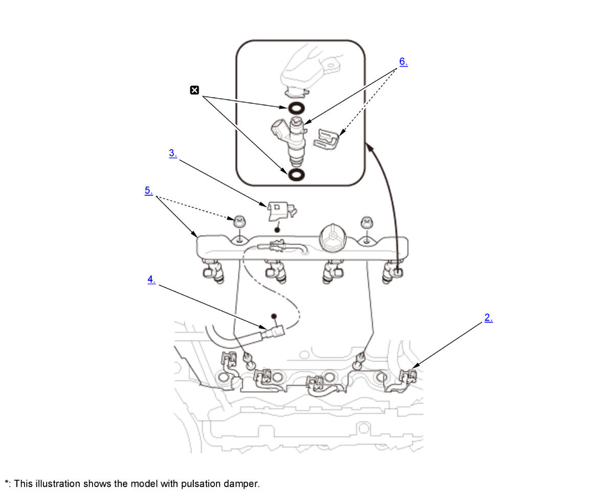

Injector Removal and Installation (K20C2): Removal: Procedure
NOTE:
Numbered call-outs in figure pertain to list numbers in following procedure.

Courtesy of HONDA, U.S.A., INC. |
Replace |
- Fuel Pressure - Relieve
- Connector (Injector) - Disconnect
- Quick-Connector Fitting Cover - Remove
- Quick-Connector Fitting - Disconnect
- Fuel Rail and Injector - Remove
- Injector - Remove